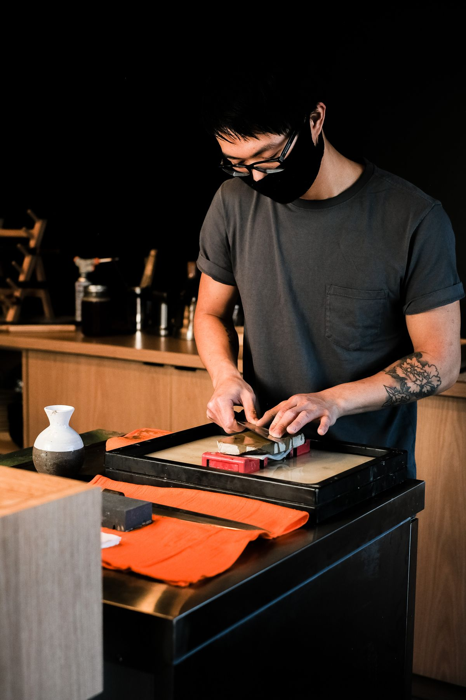

The polisher
Ten years an apprentice.
Still learning the stones.
Kenji Aoyama — togishi, sword polisher — works from a small workshop in Kamakura. This page is the short version of how he got to the bench, what the bench holds, and what owners should do with a blade once it comes home.
I came to this work sideways. At nineteen I was washing dishes in a Kamakura restaurant and spending my days off in the sword shop two streets away, where the owner tolerated my questions because I never touched anything. When a polisher in Yokohama agreed to take me on, he gave me one condition, which I pass on to anyone who asks me about apprenticeships now: for the first year, you will not polish a sword.
He meant it. The first year was stones — dressing them flat, learning their voices, carrying water, watching. The second and third were other people's practice blades and my own mistakes, worked out under his eye. It is the correct order of things. A polisher's whole skill is knowing how much steel a blade can afford to lose, and you cannot learn that from a book; you learn it by ruining cheap blades slowly, in a room where someone stops you.
I opened this workshop in 2011. The work since has been steady rather than famous: family blades, collectors' blades, school blades, museum work under documentation. I take on fewer blades than I am offered, because a polish done at the speed of a queue is a polish done badly. What I promise is narrower and, I think, worth more: an honest assessment, a fixed price, a photographic record, and a blade returned with nothing hidden and nothing invented.

The path
An apprenticeship, year by year
-
Years 1–2
Stones and water. Dressing stones flat, sorting them by voice and bite, keeping the bench. No blade of any value within reach.
-
Years 3–5
Foundation only. Shitaji on practice blades, then on real blades under supervision. The finish stones stay in their box.
-
Years 6–8
The finish, supervised. Hazuya and jizuya work, nugui, the first hadori — every stage checked before the blade moves on.
-
Years 9–10
Whole blades. First full polishes end to end, assessed by the master before return. Two were sent back to the foundation stones. Both lessons are still in use.
-
Since 2011
Independent bench, Kamakura. Private, school and museum commissions; assessments in writing; a queue that is allowed to be long rather than hurried.
The bench
Stones and tools
Everything on the bench is natural stone, paper, powder, oil and one steel needle. No wheel, no belt, no compound touches a blade here.
| Stone / tool | Stage | What it does |
|---|---|---|
| Kaisei 修正砥 | Foundation | Coarse correction — rust, shallow damage, geometry |
| Binsui 備水砥 | Foundation | Settles the surface after kaisei; one plane again |
| Chu-nagura 中名倉 | Foundation | Middle nagura — lines and the shinogi ridge sharpen |
| Koma-nagura 細名倉 | Foundation | Fine nagura — the last foundation scratch chased out |
| Uchigumori 内曇 | Foundation | Ha-to for the edge, ji-to for the body; the hamon first appears |
| Hazuya 葉ずや | Finish | Uchigumori flakes on paper, fingertip-worked along the edge |
| Jizuya 地ずや | Finish | Harder fingertip stones; draw the hada out of the body |
| Nugui 拭い | Finish | Kanahada powder in clove oil with ibota wax; darkens and evens the ji |
| Migaki-bō 磨き棒 | Finish | Steel burnishing needle for the shinogi-ji and spine |
| Uchiko 打粉 | Owners' care | Powder ball for cleaning a blade before re-oiling — see the care guide |
For owners
Care, once the blade is home
A polish is undone more often by kindness than by neglect — by well-meant wiping, oiling and showing. This is the whole of what a blade asks for.
Do
- Handle the blade through cloth or soft paper. Skin salts start rust within hours; a fingerprint left overnight is a repair.
- Every few months — and after any viewing — tap the uchiko ball lightly along the blade, wipe the powder away with clean soft paper, then re-oil.
- Oil means a whisper of chōji (clove) oil on flannel, drawn along the blade once. If it looks wet, it is too much.
- Store the blade in its shirasaya, in a dry room at roughly 50–55% relative humidity, away from exterior walls and damp.
- Look at it. A blade inspected regularly is a blade whose first spot of rust gets a phone call, not a restoration.
Do not
- Touch the steel with bare fingers — hold the tang, the scabbard, the cloth; never the blade.
- Use hardware-store rust removers, abrasive cloths, metal polishes or anything with the word "miracle" on it.
- Sharpen it. A polished sword is not maintained like a knife; an edge "touched up" on a stone undoes finish work.
- Store it long-term in leather, foam or a sealed plastic box, or in an attic or cellar.
- Attempt a repair. A chip, a bend, a patch of red rust: photograph it and write to the workshop first.
Questions about a blade you own?
Photographs and the blade's story are enough to start.
Start an enquiry or write directly: enquiries@aoyama-togishi.jp